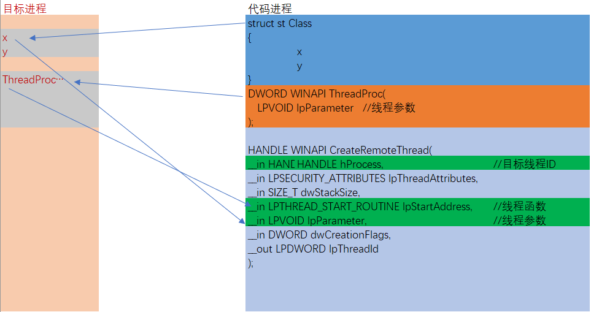
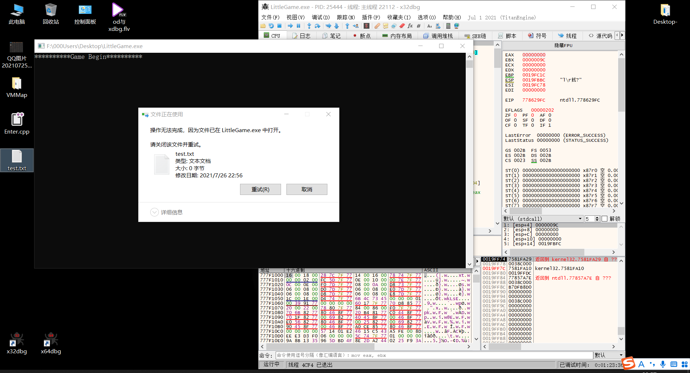

# 代码注入
把自己想要使用的函数复制到目标进程中。
复制代码的编写原则：
不能有全局变量
不能使用常量字符串
不能使用系统调用
不能嵌套调用其他函数
这些都是可以解决的。
以创建一个文件举例

以上图举例
我在代码进程中创建一个函数，这个函数实现的功能是创建一个文件。
这个函数的格式一定要遵守线程函数的格式，既一个四个字节的参数一个返回值。
写完这个函数后就可以直接把这个函数复制到目标进程中去，把复制后函数的地址，赋给 CreateRemoteThread ，这样就解决了创建远程线程后线程函数的问题，并且这个线程函数是在我的代码进程中写的，这样就可以按照我自己的要求来写。
可这个函数如果要创建一个文件的话，必须要用到 CreateFile 这个系统函数，可我们不能直接这样写，因为调用者个函数依赖的是进程本身的导入表，复制到目标进程后，目标进程的导入表跟当前进程的导入表是不一样的。
因为远程线程函数能够接受参数，那我单独在分配一块内存，比如说我这块内存是一个结构体，我把所有用到的参数都赋好值，然后复制到目标进程，并且把结构体在目标进程中的地址传给远程线程参数，这样就解决了远程线程函数参数的问题，并且线程函数和参数都是我自己可控的。
不会像 dll 注入留下明显的痕迹，唯一的痕迹就是几块内存空间了。从检测的角度来看，代码注入的检测要比 dll 注入的检测复杂的多。
# 代码实例
主要是理解流程，掌握思路。
需求：在目标进程中执行 CreateFile 函数。
如何使 CreateFile 在目标进程执行呢？
创建一个结构体，这个结构体包含：CreateFile 的函数地址。CreateFile 函数的所有参数。
使用远程线程注入，这就需要创建一个线程函数，这个线程函数的参数是指向结构体的地址，由于是在目标进程中调用，所以这个地址是目标进程中此结构体的地址。
如何实现这一点呢？
给目标进程申请一块私有内存，并写入数据。申请内存的时候会返回内存的地址。
这样就可以把线程函数和参数都传给目标进程。
如何去调用线程函数呢？
可以函数指针来实现
给目标进程开辟一块内存空间会返回内存地址，把线程函数写入这块内存空间中后，把这块内存的首地址赋给函数指针就可以调用这个线程函数了。
这个时候 CreateRemoteThread 函数所需要的参数都已经准备完毕，可以直接在目标进程中创建线程执行代码了。
/************************************************************************/ | |
/* 远程线程实现 CreateFile */ | |
/************************************************************************/ | |
#include <windows.h> | |
#include <Tlhelp32.h> | |
#include <tchar.h> | |
#include <assert.h> | |
#include<stdio.h> | |
#define WIN32_LEAN_AND_MEAN | |
//CreateFile 函数的参数 | |
typedef struct CreateFileParam { | |
DWORD dwCreateFileAddress; //CreateFile 函数的地址 | |
LPCTSTR lpFileName; // 文件名（包含路径） | |
DWORD dwDesiredAccess; // 访问模式（写 / 读） | |
DWORD dwShareMode; // 共享模式 | |
LPSECURITY_ATTRIBUTES lpSecurityAttributes; // 指向安全属性的指针 | |
DWORD dwCreationDisposition; // 如何创建 | |
DWORD dwFlagsAndAttributes; // 文件属性 | |
HANDLE hTemplateFile; // 用于复制文件句柄 | |
}CreateFileParam; | |
// 定义一个 CreateFile 一模一样的函数指针类型 | |
typedef HANDLE(WINAPI* pCreateFile) | |
( | |
LPCTSTR lpFileName, // 文件名（包含路径） | |
DWORD dwDesiredAccess, // 访问模式（写 / 读） | |
DWORD dwShareMode, // 共享模式 | |
LPSECURITY_ATTRIBUTES lpSecurityAttributes, // 指向安全属性的指针 | |
DWORD dwCreationDisposition, // 如何创建 | |
DWORD dwFlagsAndAttributes, // 文件属性 | |
HANDLE hTemplateFile // 用于复制文件句柄 | |
); | |
// 获取进程的 PID | |
DWORD ByNameGetPid(LPCTSTR lpName) | |
{ | |
HANDLE hProcSnap = CreateToolhelp32Snapshot(TH32CS_SNAPPROCESS, NULL);// 获取进程快照句柄 | |
assert(hProcSnap != INVALID_HANDLE_VALUE); | |
PROCESSENTRY32 pe32; | |
pe32.dwSize = sizeof(PROCESSENTRY32); | |
BOOL flag = Process32First(hProcSnap, &pe32);// 获取列表的第一个进程 | |
while (flag) | |
{ | |
if (!_tcscmp(pe32.szExeFile, lpName)) | |
{ | |
CloseHandle(hProcSnap); | |
return pe32.th32ProcessID;//pid | |
} | |
flag = Process32Next(hProcSnap, &pe32);// 获取下一个进程 | |
} | |
CloseHandle(hProcSnap); | |
return NULL; | |
} | |
// 编写要复制到目标进程中的函数 | |
DWORD WINAPI CreateFileThreadProc(LPVOID lpParam) { | |
// 转换参数 | |
CreateFileParam* cfParam = (CreateFileParam*)lpParam; | |
// 声明变量，赋值 | |
pCreateFile pCF = (pCreateFile)cfParam->dwCreateFileAddress; | |
// 传参 | |
HANDLE hFile = pCF( | |
cfParam->lpFileName, | |
cfParam->dwDesiredAccess, | |
cfParam->dwShareMode, | |
cfParam->lpSecurityAttributes, | |
cfParam->dwCreationDisposition, | |
cfParam->dwFlagsAndAttributes, | |
cfParam->hTemplateFile | |
); | |
return NULL; | |
} | |
// 远程创建文件 | |
BOOL RemoteCreateFile(DWORD dwPid, LPCTSTR lpFilePathName) { | |
//. 获取进程的句柄 | |
HANDLE hProcess = OpenProcess(PROCESS_ALL_ACCESS, FALSE, dwPid); | |
if (hProcess == NULL) | |
{ | |
printf("OpenProcessError!: %d\n",GetLastError()); | |
return FALSE; | |
} | |
// 分配内存 | |
// 用来存储字符串参数中的文件名 | |
//wcslen 获取的是字符数，要将其转换为字节数 | |
// 函数执行成功返回内存首地址 | |
LPVOID MemAddressOfFileName = VirtualAllocEx( | |
hProcess, | |
NULL, | |
_tcslen(lpFilePathName) * 2 + 2, | |
MEM_COMMIT, | |
PAGE_READWRITE | |
); | |
if (MemAddressOfFileName == NULL) | |
{ | |
printf("Write MemAddressOfFileName Error!: %d\n", GetLastError()); | |
return FALSE; | |
} | |
// 用来存储线程函数 | |
LPVOID MemAddressOfThreadProc = VirtualAllocEx( | |
hProcess, | |
NULL, | |
0x400,// 函数在内存中的大小给个大点的值 | |
MEM_COMMIT, | |
PAGE_EXECUTE | |
); | |
if (MemAddressOfThreadProc == NULL) | |
{ | |
printf("Write MemAddressOfThreadProc Error!: %d\n", GetLastError()); | |
// 关闭资源 | |
CloseHandle(hProcess); | |
return FALSE; | |
} | |
// 用来存储文件参数 | |
LPVOID MemAddressOfParam = VirtualAllocEx( | |
hProcess, | |
NULL, | |
sizeof(CreateFileParam), | |
MEM_COMMIT, | |
PAGE_READWRITE | |
); | |
if (MemAddressOfParam == NULL) | |
{ | |
printf("Write MemAddressOfParam Error!: %d\n", GetLastError()); | |
// 关闭资源 | |
CloseHandle(hProcess); | |
return FALSE; | |
} | |
// 初始化参数 | |
CreateFileParam cfParam; | |
// 文件名 | |
cfParam.lpFileName = (LPCTSTR)MemAddressOfFileName; | |
// 其他参数 | |
cfParam.dwDesiredAccess = GENERIC_READ | GENERIC_WRITE; | |
cfParam.dwShareMode = NULL; | |
cfParam.lpSecurityAttributes = NULL; | |
cfParam.dwCreationDisposition = OPEN_ALWAYS; | |
cfParam.dwFlagsAndAttributes = FILE_ATTRIBUTE_NORMAL; | |
cfParam.hTemplateFile = NULL; | |
// 获取 CreateFile 的地址 | |
HMODULE hModule = GetModuleHandle(L"kernel32.dll"); | |
cfParam.dwCreateFileAddress = (DWORD)GetProcAddress(hModule, "CreateFileW"); | |
// 开始复制到目标进程 | |
// 拷贝文件名 | |
WriteProcessMemory( | |
hProcess, | |
MemAddressOfFileName, | |
lpFilePathName, | |
_tcslen(lpFilePathName) * 2 + 2, | |
NULL | |
); | |
// 拷贝线程函数 | |
// | |
// 修改线程函数起始地址 | |
DWORD dwFunAddr = (DWORD)CreateFileThreadProc; | |
// 间接 CALL | |
if (*((BYTE*)dwFunAddr) == 0xE9) | |
{ | |
dwFunAddr = dwFunAddr + 5 + *(DWORD*)(dwFunAddr + 1); | |
} | |
WriteProcessMemory( | |
hProcess, | |
MemAddressOfThreadProc, | |
(LPVOID)dwFunAddr, | |
0x400, | |
NULL | |
); | |
// 拷贝参数 | |
WriteProcessMemory( | |
hProcess, | |
MemAddressOfParam, | |
&cfParam, | |
sizeof(CreateFileParam), | |
NULL | |
); | |
// 创建远程线程 | |
DWORD dwThreadId;// 返回线程 id, 失败则为 NULL | |
// 如果成功，返回新线程句柄，失败则为 NULL | |
HANDLE hThread = CreateRemoteThread( | |
hProcess, | |
NULL, | |
NULL, | |
(LPTHREAD_START_ROUTINE)MemAddressOfThreadProc, | |
MemAddressOfParam, | |
NULL, | |
&dwThreadId | |
); | |
if (hThread == NULL) | |
{ | |
printf("CreateRemoteThread Error!\n"); | |
CloseHandle(hProcess); | |
CloseHandle(hModule); | |
return FALSE; | |
} | |
//. 关闭资源 | |
CloseHandle(hProcess); | |
CloseHandle(hThread); | |
return TRUE; | |
} | |
int main() { | |
LPCTSTR CreateFileName = L"F:\\000Users\\Desktop\\test.txt"; | |
RemoteCreateFile( | |
ByNameGetPid(L"LittleGame.exe"), | |
CreateFileName); | |
return 0; | |
} |
写代码并不复杂，运行的时候碰到了很多问题。
搞了整整一天，还重写了几次，VS2019 的坑也踩了好多。最后功夫不负有心人：

# 总结
理解了海哥说的话：了解 C 和硬编码后，Win32 汇编能做的，C 一样能做。